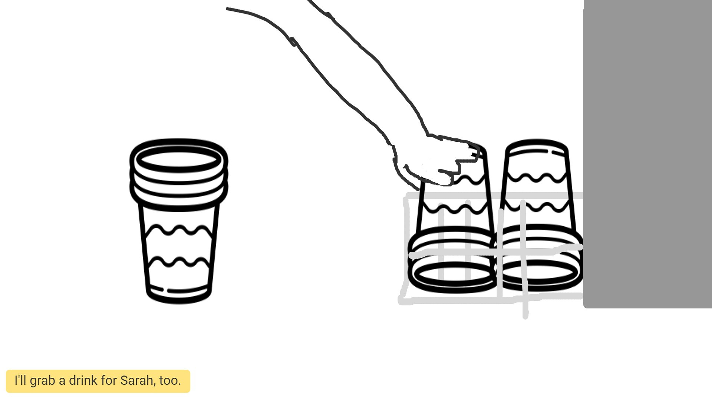

Ratty Drink Machine (Coca-Cola Freestyle) Personas & Storyboard
Part 1: Preparation
Sketches
The Coca-cola freestyle machine is shaped like a simple rectangular prism. The front of the machine consists of two important parts: the drink slot and the touchscreen. By interacting with the touchscreen, users may select the drink they want to pour. Icons that are colored gray signify that the machine is out of that kind of drink. You can filter the drinks on the default screen (or “menu”) by touching one of the four buttons on the bottom of the touchscreen. Once the user selects a drink, they will be taken to the next screen. Here, they can select different flavors of the drink and view nutritional information. After they have made a selection, the user must then push the lever on the right with their cup in hand to start pouring. They can also fill their cup with ice if they press it against the lever on the left. Lastly, there is a virtual pouring option if the user scans the QR code on the default screen. This allows them to control the pouring from their phone. The user would still have to hold their cup under the fountain if they do this, but they wouldn’t have to press the lever.
Questions for Users
- What drink did you get?
- Did you get any ice?
- Did you filter your drink options on screen before making a selection?
- Is the drink as good as the last time you had it?
- Was this your first choice of drink?
- How long did it take for you to get to the front of the drink line?
- How would you compare this machine to the one in the ivy room?
- On a scale from 1-10 (1 being easiest, 10 being hardest), how difficult was it to select the drink you wanted?
- Do you keep track of how many calories are in your drink?
- How do you envision that this machine works?
- Have you ever used the virtual pour option?
Part 2: Observations
Most of the students were able to get their first drink of choice without any difficulty or hesitation. Several students grabbed two cups at once and were able to fill both of them up quickly. All of the students I observed picked their drink directly from the default screen, without using any of the filtering options. At one point, a dining worker opened the compartment to the right of the touchscreen and started refilling the flavors. However, the compartments weren’t opening properly and the touchscreen became unresponsive. After a while, a different worker came by and rebooted the machine, which fixed it.
Takeaways from the Interviews
- Two students got their drink of choice, and one did not.
- None of the students used the filtering options before selecting their drink. However, one claimed that they have used them before. Also, none had ever used the virtual pour feature.
- All students responded that the machine was very easy to use. To be more precise, all said that on a scale from 1 to 10 (10 being hardest), this machine had a difficulty of 1.
- Two of the students claimed that this machine is better than the one in the ivy room. One mentioned that it’s “more accessible.”
- Students generally believed that the machine stores drinks and flavors separately. Two of them also thought that there was some moving part in the machine that would adjust based on the selection that was made.
- The dining worker who was trying to repair the machine mentioned that just like a computer, it’s prone to viruses and slowdowns.
- All students interviewed mentioned that they wanted the interview to be quick.
Part 3: Personas
This student is in a rush. They are busy with classes, work, and other responsibilities and want to limit their time at the Ratty. They would not appreciate it if there was a line, if their first choice of drink was out, or if the machine was out of order entirely. It's mostly Brown students using these machines, and like this persona, many of them are stressed or in a hurry.
.png)
This is a dining worker at Brown. They are super busy and must handle many different responsibilities, one of which is restocking the drink machine. If the drink machine's touchscreen becomes unresponsive or one of the cartridges refuses to open, then the machine has to be rebooted before the worker can restock.
Part 4: Storyboard
|
Jeff, our hurried student, approaches the drink machine. |

Before filling up, Jeff decides to get an extra drink for his friend Sarah. |
Jeff notices the QR code in the corner of the touchscreen, but doesn't bother looking into what it does. He notices that Sprite, the drink he usually gets, is out. |
|
Jeff is slightly annoyed by the inconvenience, but settles on Sprite Zero instead. |
There's no time or need to look at the info on calories. In fact, Jeff doesn't even know that this information is provided. |
Jeff is super comfortable with the drink machine because he's had to use it many times before. Without any hesitation, he starts filling both of his cups at once. |
|
Impressed with his own efficiency, Jeff tosses some of the ice from his cup to Sarah's. |
And there he goes! Jeff doesn't even bother pressing the back arrow before running off. |